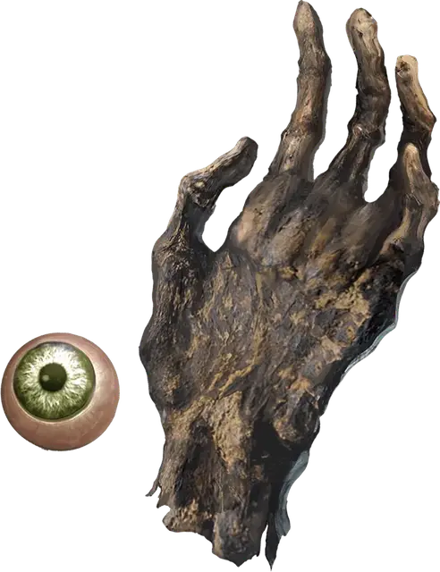

Глаз и рука Векны
Eye and Hand of Vecna
Чудесный предмет, артефакт (требуется настройка)

Имя Векны почти всегда произносят шёпотом. В своё время он был одним из самых могущественных волшебников. Благодаря завоеваниям и тёмной магии он создал ужасную империю. Однако, не смотря на всю свою мощь, Векна оставался смертным. Он начал бояться смерти и предпринимать меры, чтобы максимально отдалить свой конец.
Оркус, демонический повелитель нежити, научил Векну ритуалу, который позволил жить в качестве лича. Совершив его, тот стал могущественнейшим из всех личей. Несмотря на иссохшее и разлагающееся тело, Векна продолжил расширять свои владения. Характер его был таким ужасным, что подчинённые боялись произнести его имя. Он был Шепчущим, Владыкой Паучьего Трона, Неумирающим Королём и Владыкой Гниющей Башни.
Одни говорят, что полководец Векны, Кас, сам возжелал занять Паучий Трон, другие утверждают, что поднять восстание Каса уговорил меч, созданный его же владыкой. Какова бы ни была причина, но Кас окончил правление Неумирающего Короля в ужасном сражении, которое превратило башню Векны в горстку пепла. От Векны остались лишь одна рука и один глаз, жуткие артефакты, всё ещё воплощающие волю Шепчущего.
Глаз Векны и руку Векны можно найти вместе, а можно по отдельности. Глаз выглядит как обычный глаз с кровоподтёками, вырванный из глазницы. Рука — высохшая и мумифицированная.
Для того, чтобы настроится на глаз, нужно вырвать свой собственный глаз и поместить артефакт в глазницу. Он сам прирастёт и останется с вами, пока вы не умрёте. Заняв своё место, глаз становится золотистым, но с вертикальным зрачком, как у кошки. Если глаз когда-нибудь изымут, вы умрёте.
Для того чтобы настроиться на руку, вы должны отрубить левую руку по запястью и приложить к обрубку артефакт. Рука сама прирастёт и станет полностью функционирующей. Если руку когда-нибудь отнимут, вы умрёте.
Случайные свойства. Глаз Векны и рука Векны обладают несколькими свойствами, определяемыми случайным образом для каждого из них:
- 1 малое положительное свойство
- 1 основное положительное свойство
- 1 малое отрицательное свойство
Свойства Глаза. Ваше мировоззрение становится нейтрально-злым, и вы получаете следующие преимущества:
- Вы получаете истинное зрение.
- Вы можете действием начать видеть так, как если бы носили кольцо проникающего зрения [ring of x-ray vision]. Вы можете окончить этот эффект бонусным действием.
- У глаза есть 8 зарядов. Вы можете действием потратить 1 или несколько зарядов, чтобы наложить им одно из следующих заклинаний (Сл спасброска 18): корона безумия [crown of madness] (1 заряд), подсматривание [clairvoyance] (2 заряда), подчинение чудовища [dominate monster] (5 зарядов), разящее око [eyebite] (4 заряда) или распад [disintegrate] (4 заряда). Глаз каждый день восстанавливает 1к4+4 заряда на рассвете. Каждый раз, когда вы накладываете глазом заклинание, существует 5-процентный шанс, что Векна вырвет вашу душу и пожрёт её, сделав ваше тело своей марионеткой. Если это произойдёт, вы становитесь персонажем Мастера.
Свойства руки. Ваше мировоззрение становится нейтрально-злым, и вы получаете следующие преимущества:
- Ваша Сила становится равной 20, если только она не была больше 20.
- Все рукопашные атаки заклинанием, которые вы совершаете этой рукой, и все рукопашные атаки оружием, совершённые оружием, которое вы держите в этой руке, дополнительно наносят при попадании 2к8 урона холодом.
- У руки есть 8 зарядов. Вы можете действием потратить 1 или несколько зарядов, чтобы наложить ей одно из следующих заклинаний (Сл спасброска 18): замедление [slow] (2 заряда), перст смерти [finger of death] (5 зарядов), телепортация [teleport] (3 заряда) или усыпление [sleep] (1 заряд). Рука каждый день восстанавливает 1к4 + 4 заряда на рассвете. Каждый раз, когда вы накладываете этой рукой заклинание, она накладывает на вас заклинание внушение [suggestion] (Сл спасброска 18), требуя, чтобы вы совершили злой поступок. Она может требовать конкретное деяние, а может оставить выбор действия за вами.
Свойства глаза и руки. Если вы настроены одновременно на глаз и на руку, вы получаете следующие дополнительные преимущества:
- Вы получаете иммунитет к болезням и ядам.
- Использование проникающего зрения глаза не подвергает вас истощению.
- Вы предчувствуете опасность и, если вы дееспособны, вы не можете быть захвачены врасплох.
- Если вы начинаете ход с как минимум 1 хитом, вы восстанавливаете 1к10 хитов.
- Если у существа есть скелет, вы можете попытаться превратить его кости в желе прикосновением руки Векны. Вы совершаете действием рукопашную атаку по существу, к которому можете прикоснуться, используя на свой выбор бонус рукопашной атаки или для оружия или для заклинания. При попадании цель должна преуспеть в спасброске Телосложения Сл 18, иначе её хиты опускаются до 0.
- Вы можете действием наложить заклинание исполнение желаний [wish]. Это свойство нельзя использовать повторно, пока не пройдёт 30 дней.
Уничтожение глаза и руки. Если глаз Векны и рука Векны приросли к одному и тому же существу, и это существо убивается мечом Каса [sword of Kas], и глаз и рука вспыхивают, превращаются в пепел и уничтожаются навсегда. Любые другие попытки уничтожить глаз и руку кажутся успешными, но артефакты восстанавливаются в одном из многочисленных тайных хранилищ Векны, где снова ждут, пока их найдут.